The unifiedmeds YouTube channel: profile, banner, thumbnails, Shorts covers, end screens, lower thirds, title cards and the watermark. Two options for each, A (editorial, photo-led) and B (graphic, colour-led), on a desktop and on a phone.
Current
The kit is approved for use. The profile picture is Option B, the white u|m on Navy (R-93, U-27). Legal approves every video, title and description before it runs (U-30). Sizes follow YouTube’s published specs; check them again before the channel opens.
To confirm
Option A or B per asset (Avi). Lines are candidates; handles and links are placeholders. Photos are Pexels stand-ins, not approved, to replace (R-39, O-13).
The profile, desktop and mobile.
The channel page on youtube.com and in the app. The banner is the same file; the phone shows only its centre.
Option A · editorial, photo-led
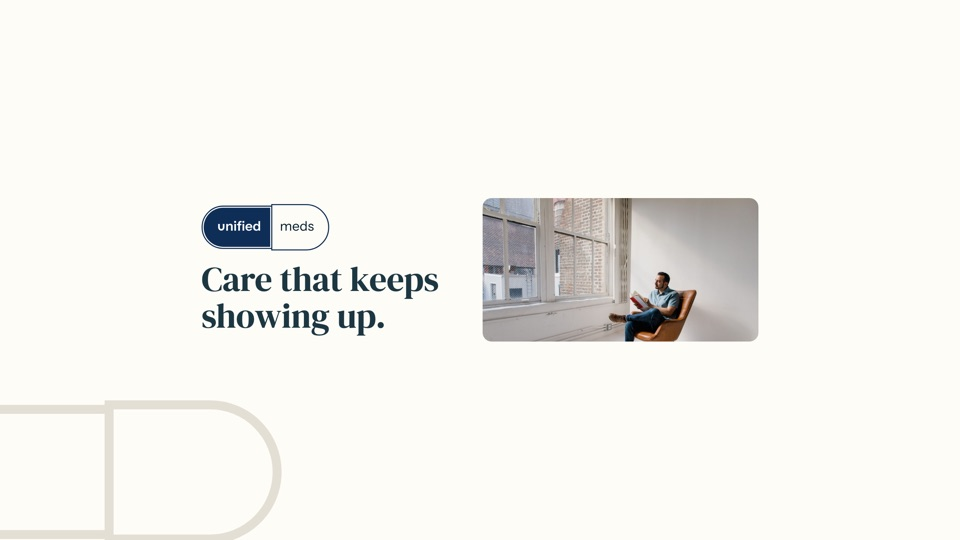
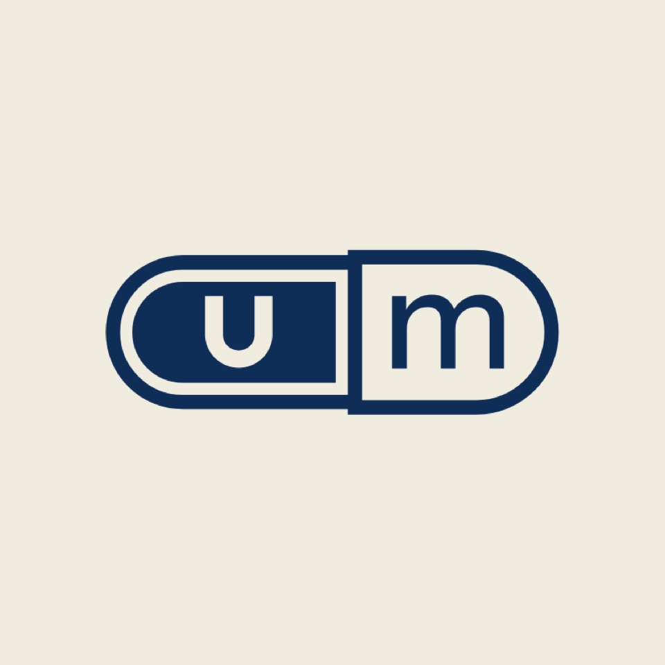
unifiedmeds[@unifiedmeds] · [0] subscribers · [0] videosPlain explainers on men’s health care online: how the assessment works…Subscribe
HomeVideosShortsPlaylists
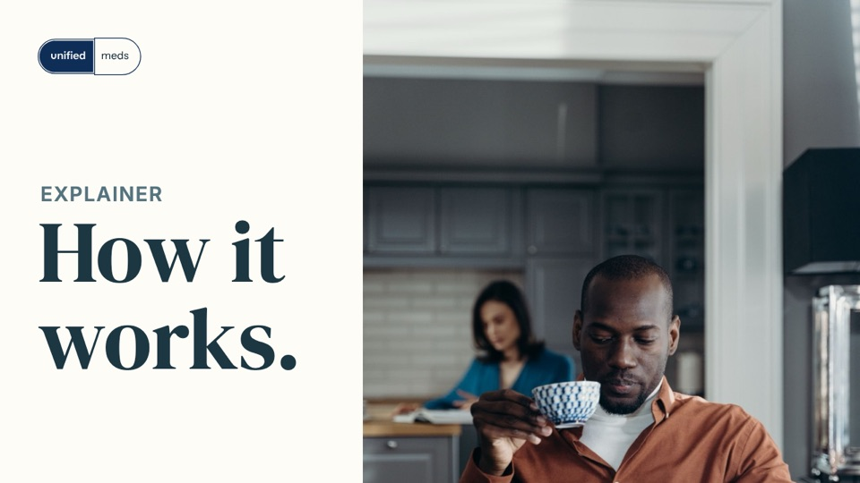
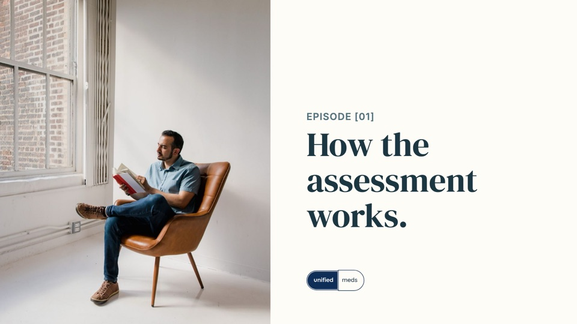
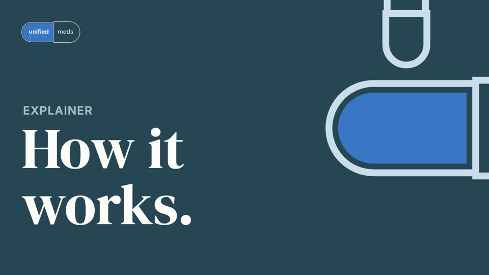
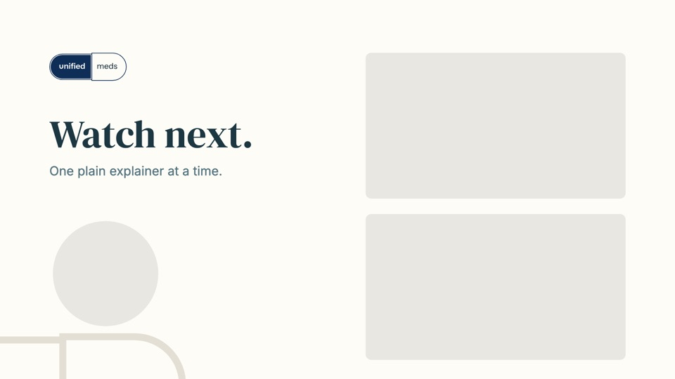
Desktop · youtube.com · the banner shows as a 2560 × 423 strip; avatar 160 px.
unifiedmeds[@unifiedmeds]
Subscribe
HomeVideosShorts
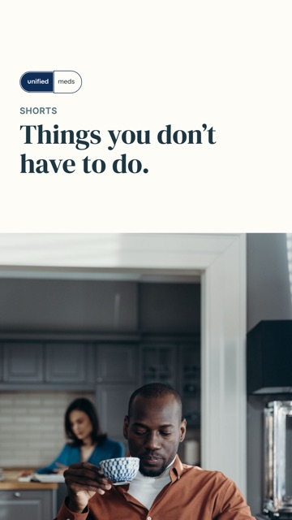
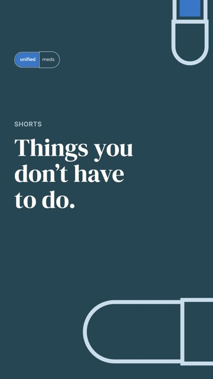
Phone · 390 wide · only the centre 1546 × 423 of the banner shows; avatar 72 pt.
Option B · graphic, colour-led
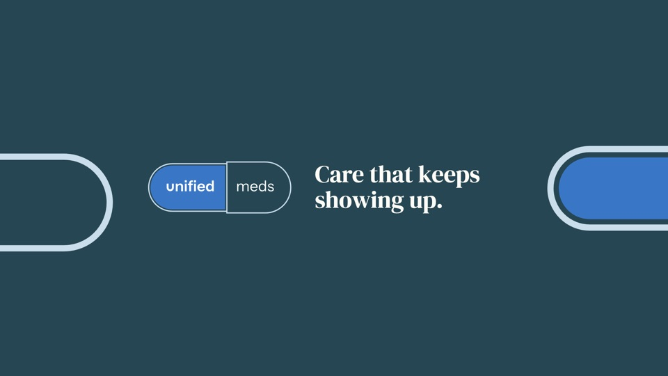
unifiedmeds[@unifiedmeds] · [0] subscribers · [0] videosPlain explainers on men’s health care online: how the assessment works…Subscribe
HomeVideosShortsPlaylists
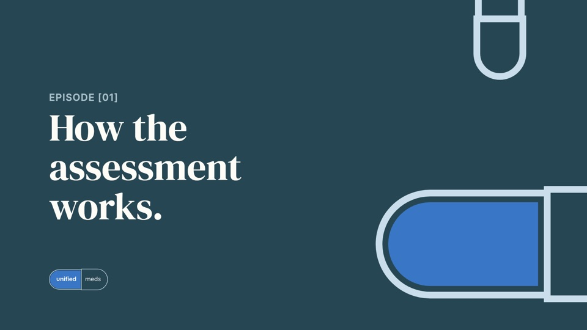
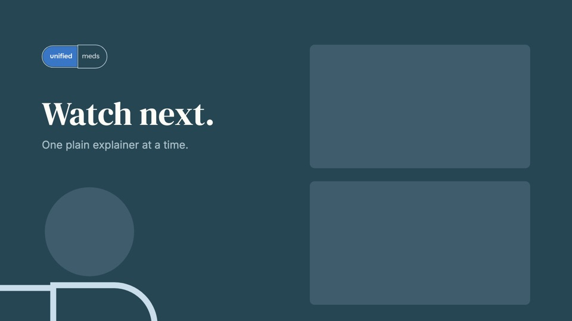
Desktop · youtube.com · the banner shows as a 2560 × 423 strip; avatar 160 px.
unifiedmeds[@unifiedmeds]
Subscribe
HomeVideosShorts
Phone · 390 wide · only the centre 1546 × 423 of the banner shows; avatar 72 pt.
The asset set.
Each block: use, exact size, safe zone (the dashed overlay; switch it off to see the art) and Option A beside Option B. Coral marks what YouTube covers; dotted blue lines are the other crops.
Profile picture
Shown as a circle: 160 px on the channel page, 72 pt on a phone, 24 to 36 px next to every video. The logo files as they are.
Size
800 × 800 px
Ratio
1:1, cropped to a circle
Type
PNG or JPG
Max file
4 MB
Safe zone
The inscribed circle
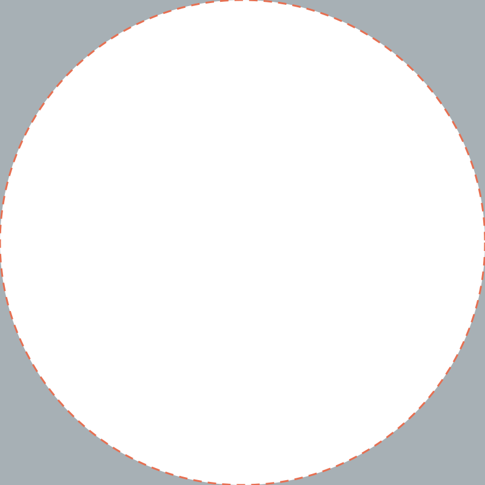
Option A · The “u|m” mark in Navy on Cream, the same in all six kits. Light and calm, reads at every size. · PNG · SVGOption B · The app icon, “u|m” on Navy (R-93). The only one that reads at 24 px. · PNG · SVG
Channel banner
One file, four crops. A TV shows all of it, a desktop a wide strip, a phone only the centre. The logo and the line live in the centre 1546 × 423; everything outside is mood.
Size
2560 × 1440 px
Ratio
16:9
Type
PNG or JPG
Max file
6 MB
Safe zone
1546 × 423, centred (x 507, y 508)
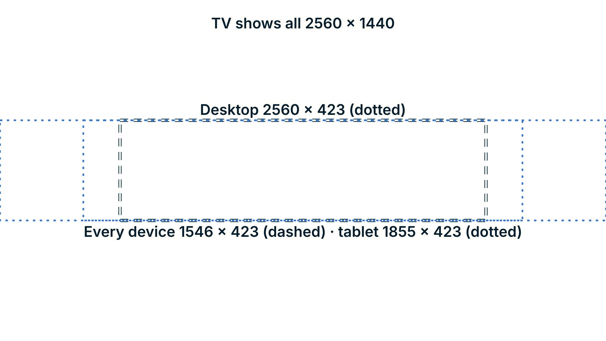
Option A · Paper, the seal and the line on the left, a photo in a rounded window. Everything inside the safe area. · PNG · SVGOption B · Deep Teal, the reversed seal large, two capsules that only desktop and TV show. · PNG · SVG
TV · 2560 × 1440, all of itDesktop · 2560 × 423Tablet · 1855 × 423Phone · 1546 × 423, the safe area
Option A in every crop.
TV · 2560 × 1440, all of itDesktop · 2560 × 423Tablet · 1855 × 423Phone · 1546 × 423, the safe area
Option B in every crop.
Thumbnail
The poster for every long video. It must read at 168 px wide, the size in the phone’s list and in “Up next”. Three words or fewer, no face under type, nothing in the bottom right where the duration sits.
Size
1280 × 720 px
Ratio
16:9
Type
JPG or PNG
Max file
2 MB
Safe zone
Bottom right 210 × 90 under the duration badge
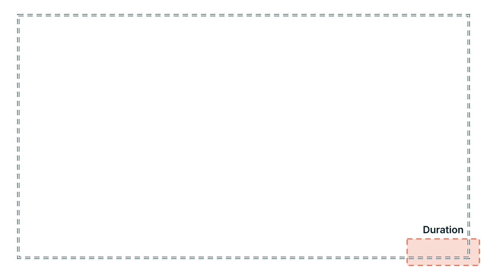
Option A · Paper panel, “How it works.” in DM Serif 130, the photo on the right. · PNG · SVGOption B · Deep Teal, the words at 150, a split capsule cropped by the right edge. · PNG · SVG
Option A at 168 pxOption B at 168 px
At 168 px · the headline is about 17 px tall: still readable. Anything under 90 px at full size disappears.
Phone · list · thumbnails at about 43% of the screen.
Shorts cover
The still for a Short in the Shorts shelf and on the channel. Same layout as the TikTok cover, with YouTube’s wider rail and taller bottom.
Size
1080 × 1920 px
Ratio
9:16
Type
Frame from the video
Max file
Part of the video upload
Safe zone
x 60 to 880, y 200 to 1400
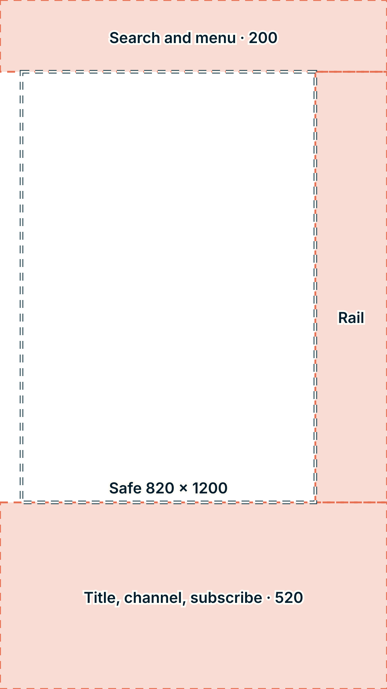
Option A · Paper panel and serif headline, the photo below. · PNG · SVGOption B · Deep Teal, the headline large, two capsules at the edges. · PNG · SVG
End screen
The last 5 to 20 seconds of a long video. The art leaves room for YouTube’s own elements: two videos on the right, Subscribe on the left. Place them in YouTube Studio exactly on the panels.
Size
1920 × 1080 px
Ratio
16:9
Type
Frames in the edit (5 to 20 s)
Max file
Part of the video
Safe zone
Elements inside the title-safe 1728 × 972
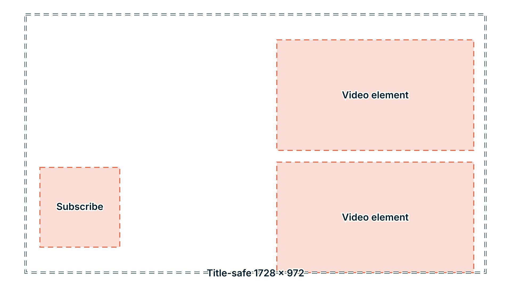
Option A · Paper, Mist panels where the elements land. · PNG · SVGOption B · Deep Teal, panels in Line on dark. · PNG · SVG
Lower third
Names the person speaking: a provider or a member of the team, only with written consent. Transparent PNG over the video, inside title-safe.
Size
1920 × 1080 px, transparent
Ratio
16:9
Type
PNG with alpha (or MOV in the edit)
Max file
Part of the video
Safe zone
x 96 or more, bottom edge at 986
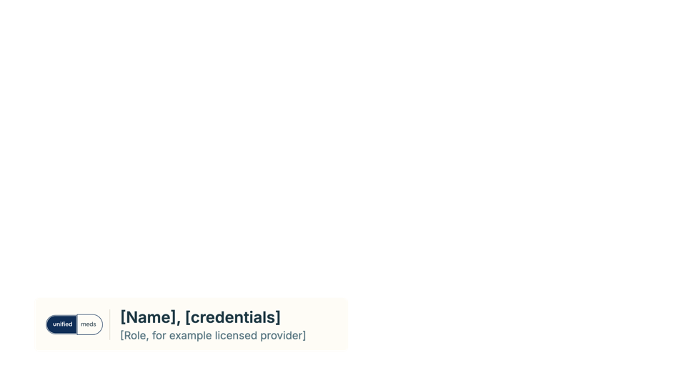
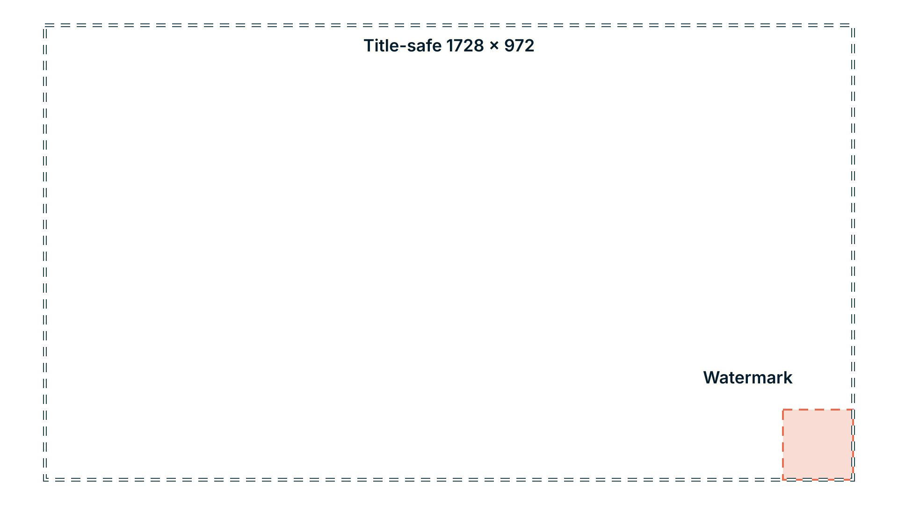
Option A · Paper card, the seal, name in Inter SemiBold 44, role in Slate. · PNG · SVG
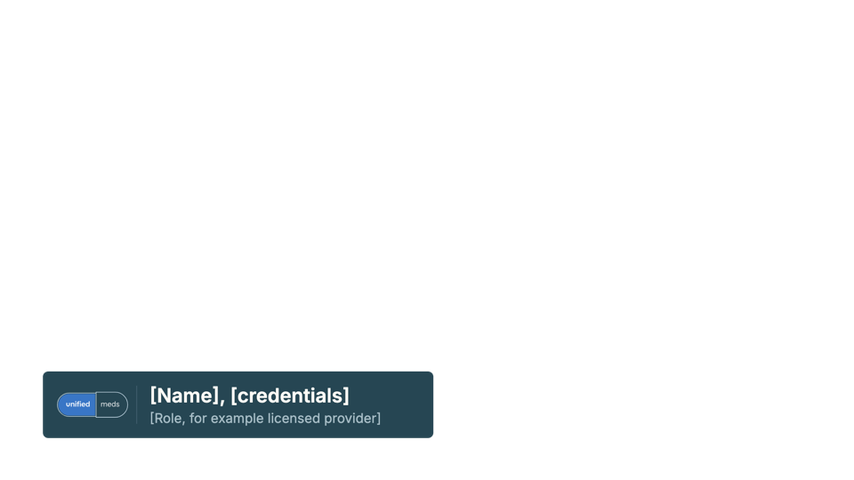
Option B · Deep Teal card, the reversed seal, Paper and Wash Blue type. · PNG · SVG
Option A over a frame. On a phone the name stays at least 16 px tall.Option B over a frame. On a phone the name stays at least 16 px tall.
Title card
Opens a long video after the logo sting (R-101), or marks a chapter. Four seconds, no sound needed.
Size
1920 × 1080 px
Ratio
16:9
Type
Frame in the edit; PNG for reference
Max file
Part of the video
Safe zone
Title-safe 1728 × 972
Option A · Photo on the left, Paper on the right, the title in DM Serif 112. · PNG · SVGOption B · Deep Teal, the title at 124, two capsules on the right. · PNG · SVG
Watermark
YouTube’s branding watermark: a small mark in the bottom right of the player that becomes a Subscribe button. Transparent PNG.
Option B · The Primary seal on a Paper square, for when the full name should show. · PNG · SVG
Option A in the player. On a phone it is about 20 px, so Option A reads better.
Option B in the player. On a phone it is about 20 px, so Option A reads better.
Mobile and desktop differences.
Most viewing is on phones and TVs. Sizes are at the full file size.
Asset
Desktop
Mobile
Keep inside
Smallest readable type
Profile picture
Circle, 160 px
Circle, 72 pt; 24 px beside comments
The inscribed circle
Both options at any size, down to 24 px
Channel banner
2560 × 423 strip
1546 × 423, the centre only
1546 × 423, centred
Line 80 px or larger (about 12 pt on a phone)
Thumbnail
About 360 px wide in the grid
168 px wide in lists; full width in the home feed
Clear of the bottom right 210 × 90
Headline 110 px or larger
Shorts cover
In the Shorts shelf, 9:16
Full screen under the rail and title
x 60 to 880, y 200 to 1400
Headline 100 px or larger
End screen
Elements at their set size
Elements shrink; the panels still line up
Title-safe 1728 × 972
Line 110 px; sub 36 px
Lower third
Over the video
Same; the video is about 390 pt wide
x 96 or more, above y 986
Name 44 px, role 30 px
Watermark
About 60 px in the player
About 20 px
YouTube places it
Option A only below 30 px
Captions and copy.
Plain titles that say what the video is. No prescription names in any social asset or caption, no result, no symptom list. Every description that offers the assessment carries the legal line.
Channel description · option 1 (1,000 characters at most)Plain explainers on men’s health care online: how the assessment works, who reviews it and what happens next. Assessment only. Not a diagnosis.
143 characters.
Channel description · option 2unifiedmeds is men’s health care, online and discreet. Short videos on how it works, from the people who run it. Assessment only. Not a diagnosis.
146 characters.
Video 1: title and descriptionHow the assessment worksTell us what’s changed. A licensed provider reviews your information. Receive a personalized care plan. Stay supported. This video walks through each step.
Assessment only. Not a diagnosis.
[unifiedmeds.com]
#unifiedmeds #menshealth
Title 24 characters (100 at most; keep under 60 so a phone shows it whole).
Video 2: title and descriptionWho reads your answersA licensed provider reviews every assessment. Here is what that means, and what it does not.
Assessment only. Not a diagnosis.
[unifiedmeds.com]
#unifiedmeds #telehealth
Title 22 characters (100 at most; keep under 60 so a phone shows it whole).
Video 3: title and descriptionThings you don’t have to do #ShortsNo waiting room. No explaining it out loud.
Assessment only. Not a diagnosis.
#unifiedmeds #Shorts
Title 36 characters (100 at most; keep under 60 so a phone shows it whole).
Hashtags and links
Up to three hashtags in the description: #unifiedmeds, then broad tags only. Never a condition, a medicine or a body part. One link, to the homepage [unifiedmeds.com, O-01]. Captions (subtitles) on every video, checked by hand.
Rules for this channel.
The banner’s logo and line stay inside the centre 1546 × 423. Outside it, only mood: ground, photo edges, capsules.
A thumbnail carries three words or fewer, at 110 px or larger, and nothing in the bottom right 210 × 90.
Every long video opens with a sting or the title card and closes on the end screen; one sting per video (R-101).
Text and elements stay inside title-safe, 1728 × 972.
A lower third names only people who agreed in writing, with their real role; a provider is shown as a licensed provider, never as a doctor (R-57).
Subtitles on every video; the voice never adds a claim the screen does not show.
The legal line is in the video and in the description whenever the assessment is offered (R-63).
No medicine, result, symptom, price, testimonial or before and after in a title, thumbnail or description (R-58, R-65, R-67).
Files.
PNG at the exact size, plus the SVG source (fonts from Google Fonts, photos embedded) and the safe-zone templates. Rebuild with python3 -I assets/social/youtube/make.py.